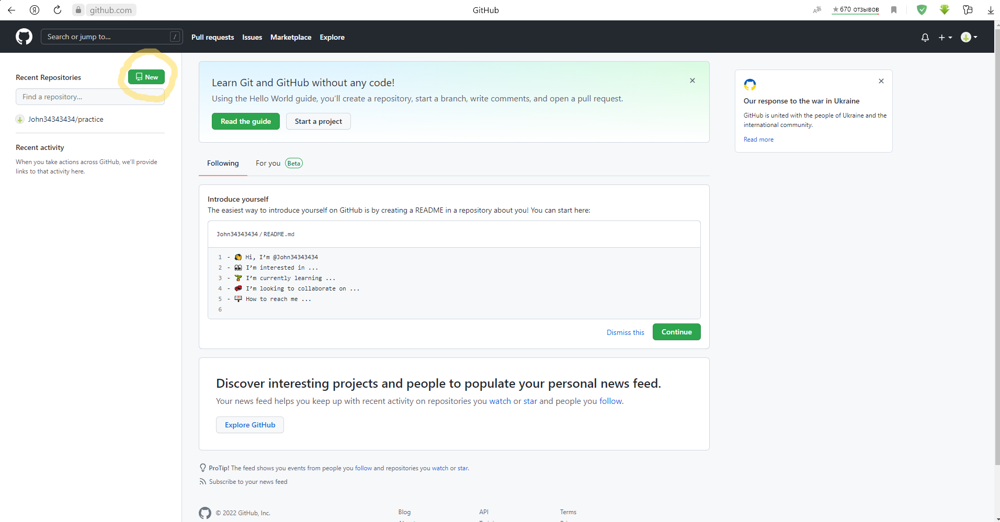
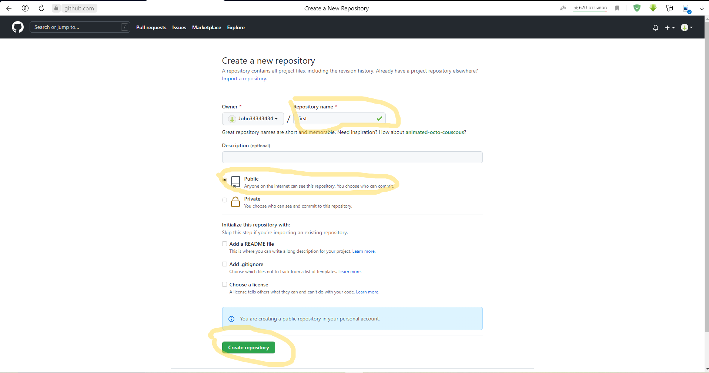
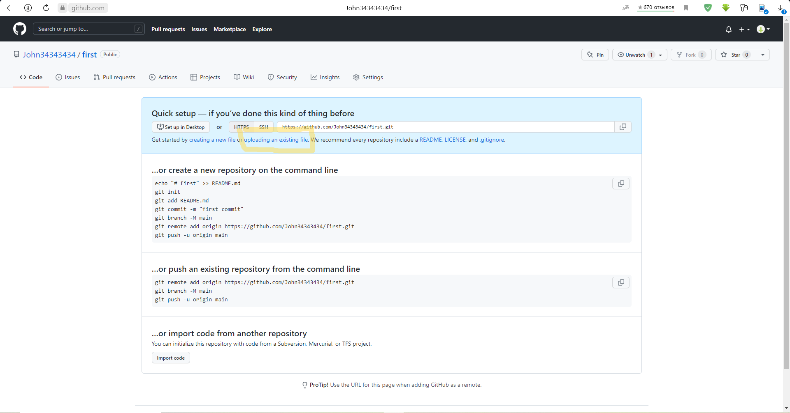
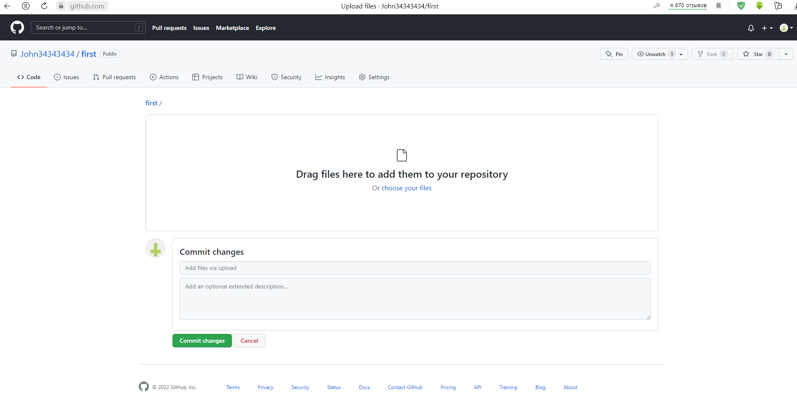

Git — это самая популярная система контроля версий в мире. GitHub Pages — это бесплатный хостинг для статических файлов. Если вы создали сайт и оставили его у себя на ПК, то посмотреть его можно только с вашего ПК. Чтобы открыть его с другого устройства, нужно перенести файлы сайта на другое устройство. Чтобы не переносить эти файлы на все устройства в мире, их нужно загружать в облачные хранилища. Облачные хранилища для сайтов называются хостингами.
Как загрузить на бесплатный хостинг GitHub Pages



